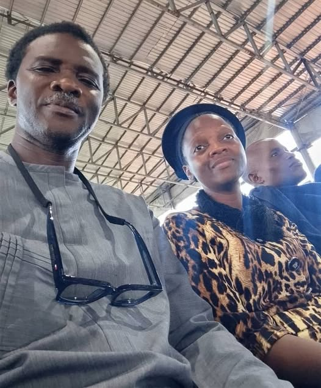

15 years ago, when I saw Intercessory Ministries in Nigeria turning to Prophetic Houses, and I saw those that use to gather periodically to …

15 years ago, when I saw Intercessory Ministries in Nigeria turning to Prophetic Houses, and I saw those that use to gather periodically to cry to God for revival in the land now gathering to promise people cars, visas, wedding rings, I knew that it was just a matter of time, an evil rain will begin to beat the Nigerian church ...
No generation rises in God beyond the capacity of their intercession... But when I attend conferences and go to bookshop, the subject of intercession are no more available, I knew, that without realizing it, we have removed our defense systems...
Many big and popular preachers among us publicly ridilcled and mocked intercessors because they didn't have fame and didn't have name...
Out of shame, many of those intercessors began to change their brands and their methods of operation, so that, they too will be respected in the land...
But that is why we are where we are today...
We must begin to apologize to all the intercessors we mocked because they didn't have private jets, crowd and massive online followers...
I will say it again, that it will not be long, the Nigerian church will know who there true prophets are ...
For now, we are still following those we love and not those we NEED ... And that is quick way to know a people that have no sense of future...
The consequences are too many ... And unfortunately, this might just be the beginning until we begin again to return to the fortress of intercession...
Only one James was killed and the entire early church halted and amended all their agendas and adopted one war cry:
"Lord, behold their threatenings..."
Esther would gather guys who are present in Shushan and build a wall of intercession with them that became the undoing of Hamman .....
Nigerian church is gradually getting to a time when it will become, not just not advisable to gather Christians in a place, but it will become impossible to gather in a place, for fear of bloody attacks ...
With this as our reality today, it is only the vain spirit of Cain that will motivate a people doomed to be exterminated to still be taking risks gathering in a place only to start asking for miracle cars and miracle jobs, the same things the Gentiles are crying for...
I may not be talking to you... But incase it looks like something is shifting in your heart right now as you are reading this...Then, its time for war ...
Gather your people or join a people ...
Raise an altar of intercession in your locality... And let the war cry remain: "Oh that thou wouldest rent the heavens, oh that thou wouldest come down..."
Let posters and handbills of intercessory prayers start rolling out, gathering believers everywhere...
How many more of our James need to be beheaded, burnt alive inside their churches or houses, our pregnant women ripped open with spear and their children roasted to death even with their toys in their hands?
Oh Nigerian church, I ask: how many more James need to lose their heads?
It is time to go back to the art of intercession, that rock from whence you were hewned...
It is time to start teaching your people how to wake up in the midnight...
Not just to pray to kill their enemies but mobilizing angels to pass through the land, to frustrate the token of liars and to make every diviner against God's people mad ...
I don't know for how long but He told us to
"Give Him no rest until He makes the church in Nigeria a praise on the earth..."
Let us pray!
By Iyke Oriaku